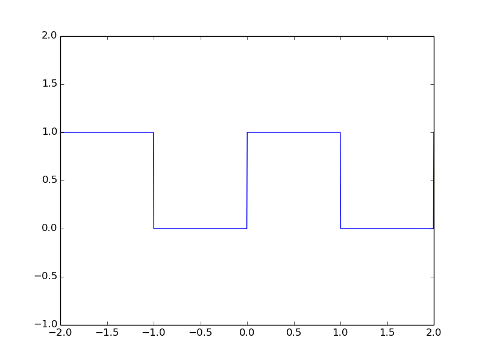
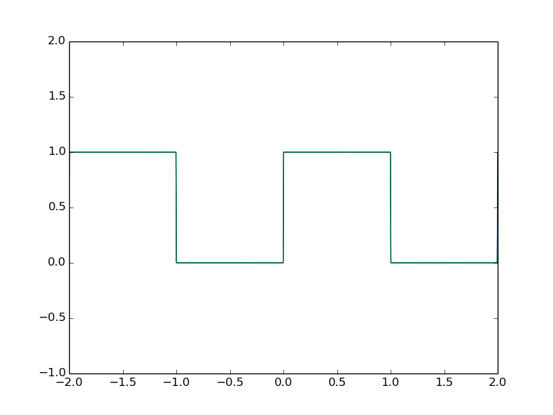

Bir önceki yazımda Python ile basit işaretleri nasıl çizdirebileceğimizi göstermiştim. Bugün bunların üzerine biraz daha katarak Fourier serilerinden bahsetmek istiyorum. Elektrik-Elektronik ve Bilgisayar mühendisliğinde çok önemli bir yer tutan fourier serileri, analizi, dönüşümü günümüzde aktif olarak kullanılmaktadır. Görüntü işlemeden, ses ve veri depolamaya kadar birçok alanda işleri kolaylaştırmaktadır. Mühendislik için vazgeçilmezdir diyebiliriz.
Fourier serileri dediğimiz olay herhangi bir periyodik fonksiyonu cosinus ve sinus fonksiyonları toplamı şeklinde yazmaktır. Kulağa çok ilginç gelmesi lazım. Ben ilk duyduğumda baya şaşırmıştım. Elime rastgele periyodik bir işaret alacam ve bunu cos, sin toplamı şeklinde yazacam.
Bu anlattıklarımın matematiğini yazacak olursak, Fourier bize herhangi bir periyodik f(t) fonksiyonunu aşağıdaki şekilde yazabiliriz diyor.
Burada yer alan w geçen yazımda da bahsettiğim gibi 2*pi*f oluyor. f te temel frekans olarak nitelendiriliyor. Bildiğiniz gibi T de 1/f ten geliyor. Bu kadar temel şeyi anlattıktan sonra formul içerisinde yer alan an ve bn katsayılarını nasıl bulacağımızın formüllerini verelim.
Burada integral limitlerine dikkatinizi çekmek isterim. 0'dan T'ye demek bir periyot boyunca integral demektir. Yani biz bu aralıkları -T/2 ile T/2 alabiliriz. Veya işaret sırasında kolaylık olması için başka bir aralık. Bu tamamen bize bağlı. Amacımız sadece bir periyot boyunca almak.
Fourier'in bize seriler konusunda anlatmak istediği bu kadar. Şimdi yukarıdaki teorik bilgiyi Python ve SciPy kullanarak gerçeğe dönüştürelim. Gerekli araçların ve modulleri nasıl eklediğimi tekrardan anlatmıyorum ve direk kodu veriyorum.
Şimdi öncelikli olarak -2 ile 2 arasında, periyodu 2 olan ve tepe noktası +1 ile 0 arasında değişen kare dalga çizdirelim. Daha sonra bu işaretin formulunu fourier serisi kullanarak hesaplayalım.
import scipy.signal as sgn
t = linspace(-2, 2, 1000)
T = 2.0
ft = (sgn.square(2*pi*t*(1/T)) + 1)/2
plot(t, ft)
ylim(-1, 2)
Yukarıdaki kodun çıktısı tam olarakta sözel olarak ifade ettiğimiz işaret olmalı. Burada square fonksiyonu -1 1 arasında değişen kare dalga oluşturuyor. Biz de bunu 1 0 arasına çekmek için 1 ekleyip 2'ye böldük. Oluşan işaret aşağıdadır.

Amacımız yukarıda yer alan kare dalgayı cosinus ve sinus fonksiyonlarının toplamı şeklinde yazmaktır. Bunun için Fourier serisi katsayılarını belirlememiz yeterlidir. an ve a0 için aşağıdaki formulleri kullanıyoruz.
Burada birşeye dikkatinizi çekmek isterim. n yerine verirsek verelim an 0 olacaktır. Haliyle bu işaretimizin cosinus bileşeni yoktur. Bu bize işaretin tek olduğu bilgisini verir. Siz de Fourier serisine açma işlemine başlamadan önce işaretin tek mi çift mi olduğunu belirlemelesiniz. Bu size ciddi bir kolaylık sağlar. Eğer işaret çift ise sinus bileşeni olmayacak tek ise de cosinus bileşeni olmayacak.
an katsayısının 0 olduğunu gördükten sonra sıra bn katsayılarını bulmaya geldi. Onu da aşağıdaki formül ile buluyoruz.
Burada ufak düzenlemeler yaptıktan sonra işaretimizin temsili aşağıdaki şekilde olacaktır.
İşin teorisini ve matematiğini hallettikten sonra şimdi bunu kendi gözümüzle görelim. Yapmamız gereken en altta yer alan sinus ifadelerini toplayıp gerçekten de ilk işaretimize benzeyip benzemediğini görmek. Hemen deneyelim.
import scipy.signal as sgn
t = linspace(-2, 2, 1000)
T = 2.0
ft = (sgn.square(2*pi*t*(1/T)) + 1)/2
fs = 1.0/2 + (2/pi)*sin(pi*t)
plot(t, ft)
plot(t, fs)
ylim(-1, 2)
Şimdilik sadece DC bileşen olan 1/2 ve ilk katsayıyı ekledik. Aşağıdaki görüntüyü elde etmemiz gerekiyor.
Fourier serisi ile oluşturduğumuz fs fonksiyonumuza bir katsayı daha eklediğimizde iyice yaklaşmaya başladığını hissediyoruz.(Mavi olan orjinal işaretimiz, Yeşil olan tek bir katsayılı, Kırmızı olan ise iki katsayılı)
fs = 1.0/2 + (2/pi)*sin(pi*t) + (2/(3*pi))*sin(3*pi*t)
Olayı anladığımız üzere artık bunun için bir fonksiyon yazıp istediğimiz kadar katsayıyı toplayıp gerçek işarete yakınlaşabiliriz.
def fs_calc(a0, fs, t, n):
result = a0
for i in range(1, n, 2):
result += (2/(i*pi))*sin(i*pi*t)
return result
a0 = 1.0/2
fs = 0
fs = fs_calc(a0, fs, t, 15)
plot(t, ft)
plot(t, fs)
ylim(-1, 2)
Yukarıdaki kod ile 15 katsayı hesapladık ve bunu çizdirdik. Sonuç aşağıdaki gibi olacaktır.
Gerçekten de katsayı sonsuza gittiğinde fonksiyona benzeyecek mi test edebiliriz artık. Katsayıyı yüksek seçtiğimizde nasıl değiştiğini görelim. Aşağıdaki resimde kırmızı ile gösterilen işaret 100 katsayı seçiminde oluşuyor.
Gerçektende yakınsıyor. Ama orada dikkatinizi bir noktaya çekmek isterim. Fonksiyonun yükselme ve alçalma noktalarında oluşan diklik katsayıyı arttırdığımızda da sürekli olacaktır. Buna Gibbs olayı deniliyor. Mümkün olduğunca azaltmamız gerekiyor. Son olarakta 10000 katsayıdan oluşan işareti çizdirelim. Artık orjinal işaretimizin aynısı oldu.

Formüller ve örneği buradan aldım.